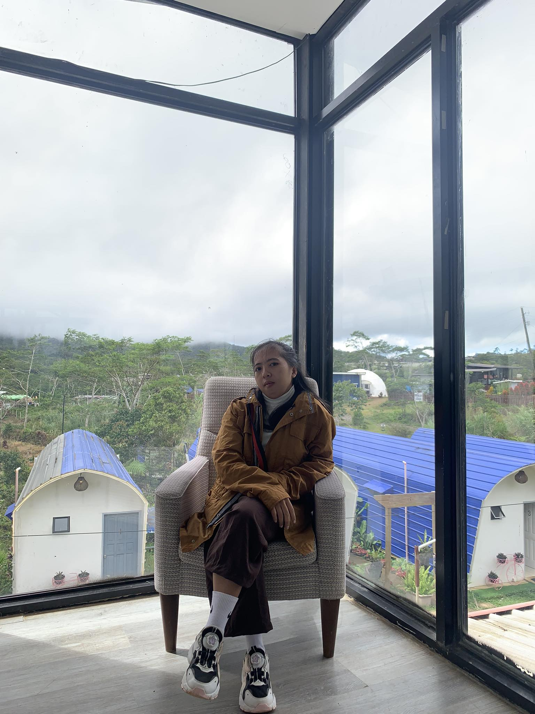

Independent builder / Butuan City, PH
Good leads deserve a better journey.
I build GoHighLevel funnels, CRM pipelines, and follow-up automations that help service businesses turn more interest into real conversations.
From first click to follow-up, I build funnels, CRM automations, landing pages, and web design.
StrategySystemsMomentum

01 / 03Clear journeys.
Calmer operations.
Calmer operations.
A little context
Built to make the next step obvious.
No disconnected tools. No mystery handoffs. Just a more considered path from “I’m interested” to “Let’s talk.”
Selected work
Proof should be easy to scan.
A few things I’ve built and designed. Open a project to see what’s live—and where to add the details only you can verify.

Funnel journey / Click a step
The follow-up starts before the form.
A good funnel isn’t a page. It’s a sequence where every handoff feels natural—and nobody has to wonder what happens next.
Map a journey with me
01 / First impression
A clear promise catches the right person’s attention and gives them one useful next step.
What I can help with
One clean journey, not five disconnected tools.
Funnels & landing pages
Focused pages with a clear offer, useful proof, and a next step that doesn’t get lost.
Talk funnelsCRM & pipelines
Lead stages and handoffs that make it easier to see who needs attention—and when.
Talk CRMGoHighLevel automations
Thoughtful follow-up that keeps a conversation warm without making the experience feel robotic.
Talk automationWeb design & builds
Fast, responsive web experiences with a little personality and a lot of clarity.
Talk web designTools & stack
A small stack, carefully connected.
The right tool is the one that makes the next step simpler. Update this list to match the tools you actively use.
GoHighLevelWordPressMakeZapierFigmaCanvaHTML / CSSJavaScript
Kind words
Trust is built in the follow-through.
The best proof comes from the people on the other side of the work.
Contact / Currently open to select projects
Where does your customer journey get stuck?
Tell me what you’re trying to build—or what isn’t working yet. I’ll reply personally and we can figure out the right next step.
Book a callBooking link not ready? This button opens email. Replace REPLACE_WITH_YOUR_BOOKING_URL in script.js when you have one.